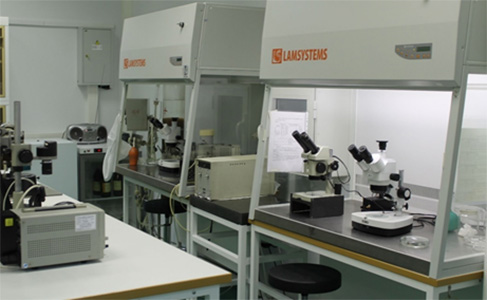

Оборудование для изготовления и контроля качества электронных систем и приборных комплексов
Комплект технологического оборудования (КТО) предназначен для изготовления и контроля качества оптико-электронных систем (ОЭС) и приборных комплексов, в том числе, работающих в видимой области спектра (от 0,5 мкм до 0,8 мкм), а также в ближней (от 0,9 мкм до 1,7 мкм), средней (от 3 мкм до 5 мкм) и дальней (от 8 мкм до 12 мкм) ИК области спектра, для оснащения личного состава Вооружённых Сил Российской Федерации.
Технические характеристики КТО
КТО обеспечивает изготовление различных типов ОЭС с производительностью и параметрами, требуемыми по ТЗ, что подтверждено результатами изготовления опытной партии в ходе приемочных испытаний.
Реализация всех технологических операций осуществляется на технологических участках со специальными требованиями к воздухоподготовке и другим параметрам помещений.
Требования по обеспечению параметров качественной воздушной среды в помещениях технологических участков КТО соответствует требованиями технологии изготовления ОЭС и ЭОП (ГОСТ ИСО 14644-1 и ГОСТ ИСО 14644-4):
- участок сборки оптико-механических компонентов – класс чистоты не ниже ISO7;
- участок сборки оптических компонентов – класс чистоты не ниже ISO7;
- участок сборки и контроля приборов – класс чистоты не ниже ISO7;
- участок центрировки оптических сборок – не регламентируется;
- вакуумный участок – класс чистоты не ниже ISO7;
- участок напыления покрытий – класс чистоты не ниже ISO7;
- участок сборки сборочных единиц, содержащих оптические детали – класс чистоты не ниже ISO7.
Требования по обеспечению параметров температуры в помещениях КТО – в пределах от 19°С до 25°С.
Требования по относительной влажности в производственных помещениях КТО – в пределах от 45 до 55%.
Требования по избыточному давлению в помещениях КТО: между помещениями разного класса чистоты обеспечен перепад давления от 5 до 20 Па.
Вакуумный участок и участок нанесения покрытий


Участок сборки и контроля приборов
Участок сборки оптических компонентов
Установка для изготовления специализированных оптических элементов МОЭК

Модернизированный технологический комплекс финишной сборки и контроля качества фотоприемных модулей для создания на их основе оптико-электронных систем и приборных комплексов
Модернизированный технологический комплекс (МТК) обеспечивает изготовление четырех типов фотоприемных модулей (ФПМ) с производительностью и параметрами, требуемыми по ТЗ, что подтверждено результатами изготовления опытной партии в ходе приемочных испытаний.
Реализация всех технологических операций осуществляется на технологических участках со специальными требованиями к воздухоподготовке и другим параметрам помещений.
Требования по обеспечению параметров качественной воздушной среды в помещениях технологических участков МТК соответствует требованиями технологии изготовления ФПМ и ЭОП (ГОСТ ИСО 14644-1 и ГОСТ ИСО 14644-4):
- машинный зал финишной сборки вакуумных блоков – класс чистоты не ниже ISO7;
- участок финишного травления катодов – класс чистоты не ниже ISO7;
- участок катодной химии – класс чистоты не ниже ISO7;
- участок термокомпрессионной сварки катодных узлов – класс чистоты не ниже ISO7;
- монтажный участок – класс чистоты не ниже ISO7;
- участок напыления ГЭС, ЭУ – класс чистоты не ниже ISO7;
- участок подготовки МКП – класс чистоты не ниже ISO7;
- участок изготовления экранного узла – класс чистоты не ниже ISO7;
- участок изготовления СЦ колец и склейки ВОЭ – не регламентируется;
- участок пескоструйной обработки – не регламентируется;
- участок прогрева и наработки ВБ – не регламентируется;
- участок вакуумной высокотемпературной обработки – класс чистоты не ниже ISO7;
- участок тепловых операций – класс чистоты не ниже ISO7;
- участок напыления КУ, МКК, ЭУ – класс чистоты не ниже ISO7.
Требования по обеспечению параметров температуры в помещениях МТК – в пределах от 19°С до 25°С.
Требования по относительной влажности в производственных помещениях МТК – в пределах от 45 до 55%.
Требования по избыточному давлению в помещениях МТК: между помещениями разного класса чистоты обеспечен перепад давления от 5 до 20 Па.
Участок тепловых операций
Участок подготовки МКП
Участок нанесения покрытий
Участок монтажа сборочных единиц
Участок монтажа сборочных единиц
Участок катодной химии
Участок термокомпрессионной сварки
Участок сборки вакуумных блоков с ПЗС матрицами